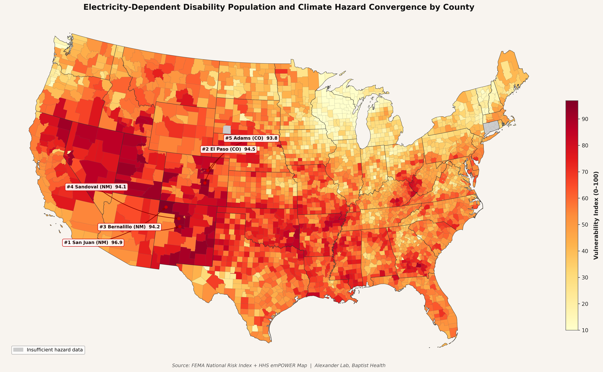

People with spinal cord injuries and other disabilities requiring electricity-dependent medical equipment face compounding vulnerability during climate events: physiological inability to thermoregulate combined with dependence on powered devices such as ventilators, oxygen concentrators, and powered wheelchairs. When extreme weather events cause power outages, this population faces life-threatening risk that current disaster preparedness frameworks do not adequately address. No published study has systematically mapped where these populations are most concentrated relative to climate hazard exposure.
This analysis joins two federal datasets — the FEMA National Risk Index and the HHS emPOWER Map — at the county level across 3,144 US counties to calculate a composite vulnerability index combining climate hazard exposure and electricity-dependent DME utilization rates. Hazard scores incorporate hurricane, heat wave, wildfire, coastal flood, and drought risk. Power dependency rates are normalized by county Medicare population to control for county size. The resulting vulnerability index identifies counties where climate hazard and disability power dependency converge most severely.

Palm Beach and Miami-Dade counties fall within the national top 10 for convergent risk — placing Baptist Health's primary service area among the highest-risk jurisdictions in the country.
These findings support targeted telerehabilitation infrastructure investment in highest-risk counties as a climate adaptation strategy, consistent with recommendations in Alexander & Alexander (2025). Counties in the top vulnerability quartile should be prioritized for disaster preparedness protocols specific to electricity-dependent disabled populations. Phase 2 of this analysis will extend the framework internationally using WHO rehabilitation access data and IPCC regional climate projections.